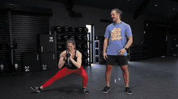
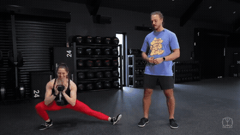
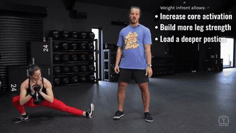
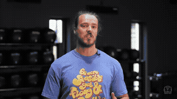

Weight in front in a goblet position, wide stance (feet outside shoulder width, toes out slightly — 5-to-1 on a clock). Neutral spine, squat over to one side sending hips back and down, heels on the floor, extended leg straight. Below parallel, return — alternate sides or do one side at a time.

Holding the load in front increases core activation, builds more leg strength through the movement with the extra load, and lets you load a deeper position to improve mobility.

1) Foot of the extended leg: flat = adductor strength; toe up = more groin stretch + hamstring/back-of-leg work. 2) Add twists, leans, reaches — bottom-position control. 3) Move the weight away from your body — changes center of mass. 4) Slide side-to-side staying low, pulling with the feet, instead of returning to center each rep.

Ankles holding you back? Elevate the heels to keep a more upright torso. Back rounding? Push the weight fully away for counterbalance. Quads bothering you? Squat to a box behind the bent leg, just below your controllable point — use that for your range.